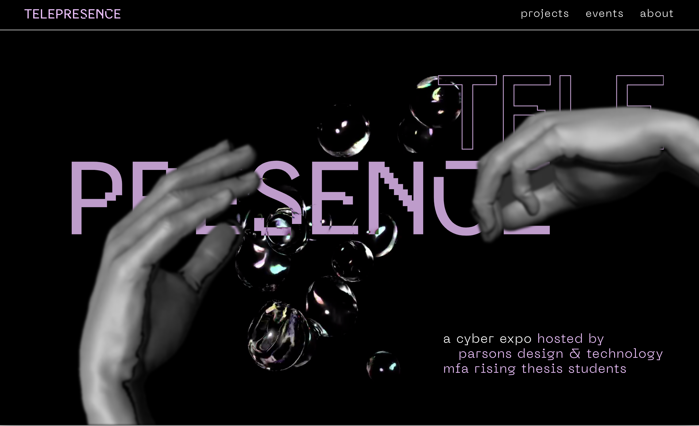
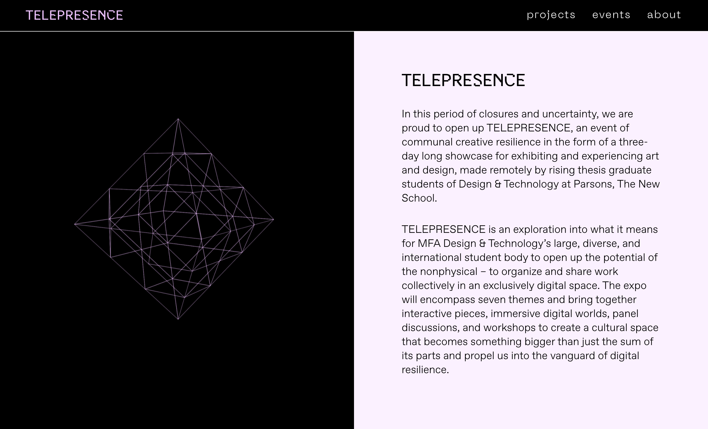
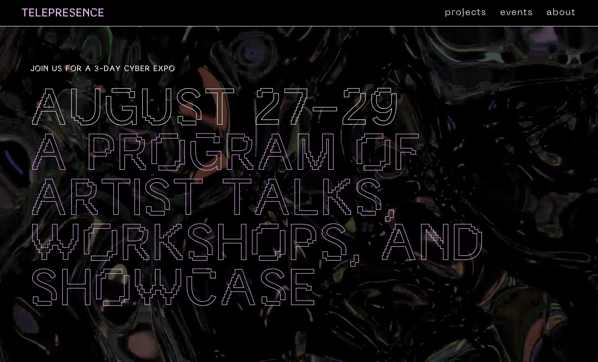
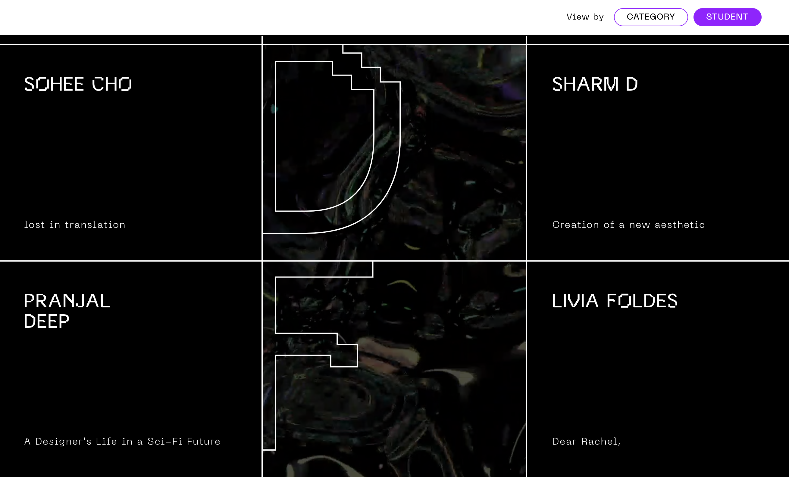

Telepresence is a cyber expo created by the Parsons Design + Technology Class of 2021 MFA students to celebrate their work at the end of the first year of the program. I helped project manage and copyedit the exhibition site. You can visit the website here.
   This project was created in collaboration with Rosa Ng and many others from design and web teams.